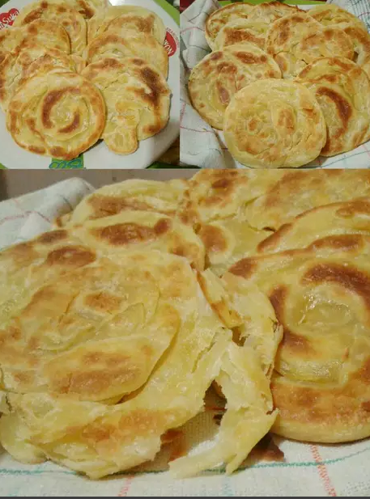

RESEP ROTI MARYAM
Bahan-bahan
- 250 gr tepung terigu
- 1 butir telur
- 3 sdm margarin, lelehkan
- 100 ml air hangat
- 2 sdm susu bubuk (optional)
- 1/2 sdt garam
- margarin leleh untuk olesan
- minyak untuk merendam
Langkah-langkah
- 1. Campur semua bahan roti jadi satu

- Uleni sampai kalis (aku pake tangan) jangan takut jika adonan lengket ya,
lumuri tangan sesekali dg tepung (tapi jangan menambahkan tepung) uleni
terus sampai adonan kalis.

- Kalisnya adonan canai tidak sekalis adonan roti ya, kira2 seperti ini sudah cukup.

- Bagi adonan menjadi 12 bagian. Kalau mau lebih besar bagi jadi 10 bagian
- Lumuri/rendam adonan dengan minyak goreng (supaya adonan tidak kering)
diamkan 1-3 jam (boleh semalaman asal ditutup serbet)
- Setelah di rendam minyak, adonan akan lebih lentur dan kalis daripada sebelumnya,
mirip adonan kulit martabak
- Ambil 1 adonan. Pipihkan melebar setipis mungkin. Olesi dengan margarin cair.
Gulung memanjang. Linting berlawanan arah spt konde. Tumpuk kedua bagian, terakhir pipihkan lagi.

- Panaskan teflon dengan api kecil aja. Panggang adonan dengan sekali balik,
tekan-tekan supaya matangnya rata. Kalau mau dikasih butter akan lebih gurih canainya
